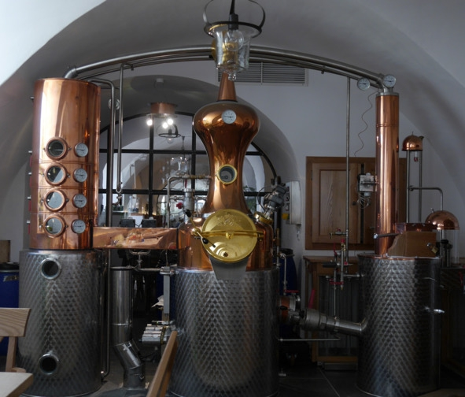
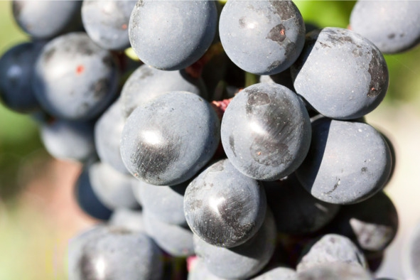
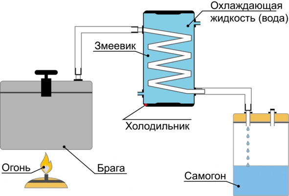
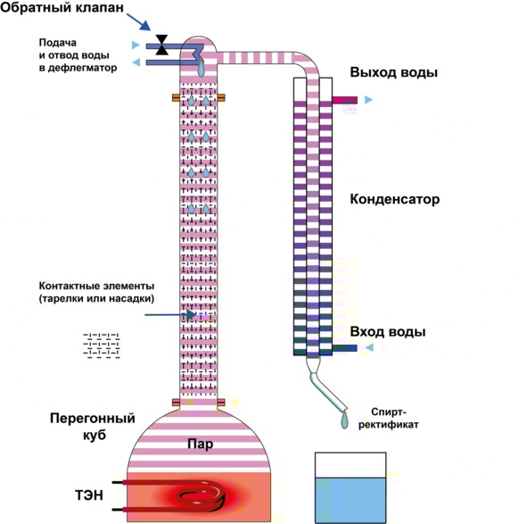
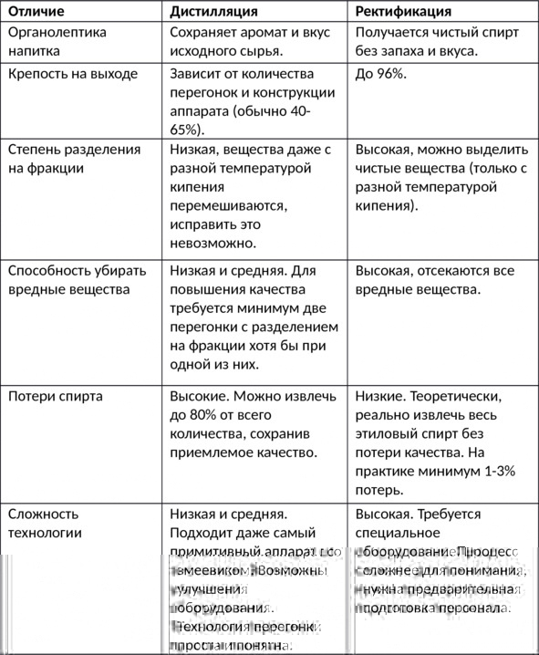
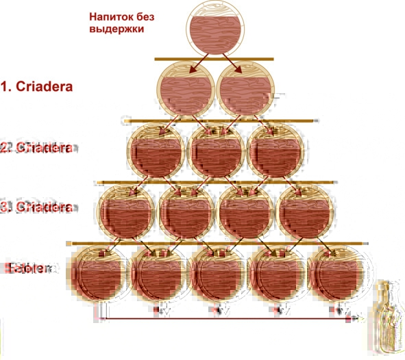

Теоретические основы приготовления алкогольных напитков

Спиртовое брожение, или Как сахар превращается в спирт
Спиртовое брожение лежит в основе приготовления любого алкогольного напитка. Это самый простой и доступный способ получить этиловый спирт. Второй метод – гидратация этилена – является синтетическим, применяется редко и только в производстве водки.
Спиртовое брожение – это процесс превращения дрожжами глюкозы в этиловый спирт и углекислый газ в анаэробной (бескислородной) среде. Уравнение следующее:
C6H12O6 > 2C2H5OH +2CO2
В результате одна молекула глюкозы превращается в две молекулы этилового спирта и две молекулы углекислого газа. Также в процессе брожения образуются сивушные масла: бутиловый, амиловый, изоамиловый, изобутиловый и другие спирты, которые являются побочными продуктами обмена аминокислот. Во многом сивушные масла формируют аромат и вкус напитка, но большинство из них вредны для человеческого организма, поэтому производители стараются очистить спиртное от вредных сивушных масел, но оставить полезные примеси.
Дрожжи – это одноклеточные грибы шарообразной формы (всего существует около 1500 видов), активно развивающиеся в жидкой или полужидкой среде, богатой сахарами: на поверхности плодов и листьев, в нектаре цветов, мертвой фитомассе и даже почве.
Это одни из самых первых организмов, «прирученных» человеком. В основном дрожжи используются для выпечки хлеба и приготовления спиртных напитков. Археологами установлено, что древние египтяне за 6000 лет до н. э. научились делать пиво, а к 1200 году до н. э. освоили выпечку дрожжевого хлеба.
Научное исследование природы брожения началось в XIX веке. Первыми его химическую формулу предложили Ж. Гей-Люссак и А. Лавуазье, но осталась неясной сущность процесса, возникло две теории. Немецкий ученый Юстус фон Либих предполагал, что брожение имеет механическую природу – колебания молекул живых организмов передаются сахару, который расщепляется на спирт и углекислый газ. В свою очередь, Луи Пастер считал, что в основе процесса брожения биологическая природа – при достижении определенных условий дрожжи начинают перерабатывать сахар в спирт. Пастеру опытным путем удалось доказать свою гипотезу, позже биологическую природу брожения подтвердили другие ученые.
Русское слово «дрожжи» происходит от старославянского глагола drozgati, что значит «давить» или «месить», здесь прослеживается явная связь с выпечкой хлеба. В свою очередь, английское название дрожжей yeast восходит к староанглийским словам gist и gyst, которые значат «пена», «выделять газ» и «кипеть», что ближе к винокурению.
Виды дрожжей
В приготовлении алкогольных напитков используют спиртовые, винные или пивные дрожжи. У каждого вида есть своя сфера применения, преимущества и недостатки.
Спиртовые дрожжи подходят для зерновых дистиллятов, любого крахмалосодержащего сырья и сахарного самогона. Быстро бродят (3—7 дней) и неприхотливы к внешним условиям (в сравнении с другими штаммами). Для сбраживания фруктовых браг спиртовые дрожжи обычно не применяются, поскольку могут испортить аромат и вкус напитка, добавив характерные спиртовые тона. Большинство начинающих самогонщиков вместо спиртовых дрожжей используют хлебопекарные сухие или свежие (прессованные) ввиду их большей доступности.
Винные дрожжи нужны для приготовления вина, наливок (сделанных методом брожения) и фруктовых браг для бренди, коньяка, кальвадоса и т. д. Не влияют или даже обогащают аромат и вкус готовых напитков, но имеют длительный период брожения (30—60 дней) и чувствительны к внешним условиям: температуре, освещению, концентрации сахара и спирта в сусле.
Винные дрожжи бывают «дикими» и «культурными». «Дикие» – штаммы, живущие на кожице фруктов и ягод, представляют собой характерный белый тонкий налет на плодах (не путать с плесенью). «Культурные» – лучшие расы, отобранные и разведенные в лабораторных условиях из дрожжей на винограде, обычно распространяются в виде порошка. В плане стабильности брожения, крепости и формирования органолептических свойств напитка «культурные» дрожжи лучше «диких».

Белый налет на винограде – винные дрожжи
Пивные дрожжи впервые как отдельный штамм были выделены специалистами компании Carlsberg в 1881 году. До этого в пивоварении использовались случайные штаммы дрожжей, попадавшие в сусло из воздуха. Процесс брожения было сложно контролировать, а готовое пиво больше напоминало кисловатую брагу с хмелем и мало походило на современный, хорошо сбалансированный пенный напиток.
Пивные дрожжи бывают двух видов:
– верхового брожения (рабочая температура 14—28°С) – в активном состоянии находятся сверху сусла, благодаря высшим спиртам и эфирам формируют широкую гамму ароматов, позволяют создавать более крепкие сорта пива;
– низового брожения (оптимальная температура 6—8°С) – при брожении оседают на дне в виде рыхлого осадка, лучше раскрывают солодовый аромат и хмелевые нотки, а пиво всегда светлое. Около 97% современного промышленного пива производят с использованием дрожжей низового брожения.
Сырье для получения алкогольных напитков
Дрожжи перерабатывают на спирт четыре вещества: сахарозу (обычный сахар), мальтозу (сахар, полученный путем расщепления крахмала в зерне, представляет собой два остатка глюкозы), фруктозу и глюкозу. Одна молекула сахарозы состоит из двух равных молекул фруктозы и глюкозы. Также глюкозу и сахарозу в достаточно больших количествах содержат ягоды, фрукты и мед.
Если большинство фруктовых соков можно забраживать сразу, а сахар и мед – после разведения водой, то в случае с зерном сначала нужно преобразовать крахмал до мальтозы, этот процесс называется осахариванием. Осахаривание – расщепление крахмалосодержащего сырья (злаков, муки, крупы, картофеля и т. д.) до простых сахаров под воздействием естественных (из солода) или искусственных (синтетических) ферментов. В силу температурных особенностей технологии первый метод называется горячим осахариванием, второй – холодным.
Горячее осахаривание – классический метод, который используется столетиями для получения пива, виски, бурбона и других алкогольных напитков на основе зерна. Сначала злаки проращивают во влажной среде, благодаря этому активируются нужные ферменты, способные перерабатывать крахмал. Проросшее до нужного состояния зерно называют солодом. Готовый солод сушат, перемалывают, заливают водой и несколько часов варят при температуре 60—72° C, чтобы крахмал расщепился до сахара. Полученное сладкое варево охлаждают, вносят дрожжи и перебраживают на спирт.
При холодном осахаривании солод заменяют двумя искусственными ферментами – амилосубтилином и глюкаваморином. Первый частично расщепляет молекулы, второй – перерабатывает крахмал в сахар. Технология холодного осахаривания значительно проще и дешевле солодовой варки, а выход спирта примерно одинаковый. Ферменты вместе с водой просто добавляют в сырье комнатной температуры на этапе приготовления браги. Преобразование крахмала в сахар и брожение идут почти одновременно.
Однако холодное осахаривание в основном используется только для получения чистого спирта-ректификата, поскольку большинство винокуров считают, что синтетические ферменты оставляют специфическое послевкусие в напитке даже после нескольких дистилляций (перегонок), а для полной очистки требуется ректификация, после которой из алкоголя удаляются как вредные, так и полезные примеси, отвечающие за аромат и вкус.
Теоретический выход спирта из глюкозы и фруктозы одинаков – 0,647 л из 1 кг сырья, а 1 кг сахарозы или мальтозы дает до 0,681 л спирта. Практический выход обычно всегда ниже теоретического на 10—15%. Это значит, что при прочих равных условиях из сахарозы или мальтозы получается на 5% больше самогона, чем из глюкозы и декстрозы.
Стоит отметить, что сладость вещества как таковая не имеет прямого отношения к выходу спирта, поскольку дрожжам требуются углеводы. Например, синтетический заменитель цикламат в 30—50 раз слаще сахара, но дрожжи его не перерабатывают. Из искусственных сахарозаменителей алкоголь не производят.
Дистилляция и ректификация – две технологии получения крепкого алкоголя
Если для приготовления вина или пива сразу после брожения переходят к выдержке и бутилированию напитков, то в случае с крепким алкоголем (водкой, виски, коньяком и т. д.) сначала нужно получить более-менее чистый спирт, чтобы избавиться от большинства других примесей. Для этого отыгравшую брагу либо дистиллируют (перегоняют на самогонном аппарате), либо подвергают ректификации с помощью специальной колонны.
Понятие дистилляции
В приготовлении спиртных напитков под дистилляцией (от лат. distillatio – стекание каплями) понимают процесс испарения спиртосодержащей смеси с последующим охлаждением и конденсацией образовавшихся паров для отделения спирта от других веществ в браге. Полученная в итоге жидкость называется дистиллятом, а само устройство – дистиллятором. Однако в России зачастую термин «дистилляция» заменяют синонимом – «перегонка».
Принцип работы дистиллятора. Жидкость доводят до кипения в перегонном кубе, образовавшиеся пары поступают в охладитель («змеевик») – изогнутую трубку, охлаждаемую водой или другим способом, где переходят в жидкое состояние и стекают в приемную емкость. Самый примитивный самогонный аппарат состоит из источника нагрева, куба для браги, охладителя, соединительных элементов (трубок, по которым движется пар) и приемной емкости для сбора дистиллята.

Схема работы самогонного аппарата
Теоретически дистилляция основана на том, что все компоненты браги имеют разную температуру кипения, вследствие чего можно получить чистые фракции. Однако на практике вещества с примерно равной температурой кипения в парообразном состоянии перемешиваются и не поддаются разделению на отдельные компоненты. Это значит, что после дистилляции в спирте обязательно останутся другие примеси, полностью убрать которые невозможно физически, выход получается «смазанным». Несмотря на этот недостаток, большинство крепких алкогольных напитков (коньяк, виски, текила и т. д.) получают именно методом дистилляции. Производитель старается минимизировать количество вредных компонентов, но оставить большинство полезных, которые во многом формируют аромат и вкус алкоголя. Это делается с помощью так называемой дробной перегонки.
Дробная перегонка: «головы», «тело» и «хвосты» дистиллята
Количество вредных примесей зависит от сырья, воды, дрожжей, температуры, длительности брожения, конструкции самогонного аппарата и технологии перегонки. Методика приготовления большинства напитков предусматривает две-три дистилляции. Цель первой перегонки – получить более-менее чистый продукт (на языке технологов называется спирт-сырец), качество которого проще улучшать. Первую дистилляцию прекращают, когда крепость в струе падает ниже 25—30%. Полученный спирт-сырец (зачастую мутная жидкость с содержанием спирта до 40%) перегоняют еще минимум один раз, однако, чтобы получить уже качественный напиток, весь дистиллят разделяют на три части (фракции): «голову», «тело» и «хвосты».
«Голова» («первач» или «первак») – начальная фракция с резким неприятным запахом. Содержит самые опасные примеси: метиловый спирт (много в зерновых и фруктовых брагах), ацетон, уксусный альдегид и другие. Благодаря тому, что температура кипения вредных веществ ниже, чем у этилового спирта, при перегонке они выходят первыми, следовательно, можно не допустить их попадания в основной продукт.
В обиходе первач считается самым качественным самогоном, поскольку крепкий и быстро опьяняет. Но на самом деле это яд в чистом виде, его употребление вызывает токсическое отравление, которое часто путают с опьянением.
«Тело» или «сердце» – средняя фракция, питьевая часть, основа любого крепкого напитка. Отбирается после «головы», когда дистиллят содержит минимум вредных веществ и максимум полезных.
«Хвост» – третья фракция, которая кроме этилового спирта содержит сивушные масла, дающие неприятный запах и мутный цвет. Температура кипения сивухи выше, чем у этилового спирта, поэтому чтобы отделить «хвост», достаточно вовремя прекратить сбор основного продукта – «тела».
В дальнейшем для приготовления напитка используют только среднюю фракцию – возможна очистка дистиллята углем (характерно для зернового сырья) и выдержка в бочках, металлических, керамических или стеклянных емкостях. «Голова» и «хвост» также содержат некоторое количество чистого спирта, но добыть его методом дистилляции нельзя, зато можно ректифицировать, получив чистый спирт.
Суть ректификации
Ректификация спирта – разделение многокомпонентной спиртосодержащей смеси на чистые фракции (этиловый и метиловый спирты, воду, сивушные масла, альдегиды и другие), имеющие разную температуру кипения, путем многократного испарения жидкости и конденсации пара на контактных устройствах (тарелках или насадках) в специальных противоточных башенных аппаратах – ректификационных колоннах.
Принцип работы ректификационной колонны. Жидкость в кубе доводят до кипения. Образовавшийся пар поднимается вверх по колонне и попадает в дефлегматор, где охлаждается и конденсируется (появляется флегма), затем по стенкам трубы возвращается в жидком виде в нижнюю часть колонны, на обратном пути контактируя с поднимающимся паром на тарелках или насадках. Под действием нагревателя флегма снова становится паром, а пар вверху – опять конденсируется дефлегматором. Процесс становится циклическим, оба потока непрерывно контактируют друг с другом.
После стабилизации (пара и флегмы достаточно для равновесного состояния) в верхней части колонны скапливаются чистые (разделенные) фракции с самой низкой температурой кипения (метиловый спирт, уксусный альдегид, эфиры, этиловый спирт), внизу – с самой высокой (сивушные масла). По мере отбора нижние фракции постепенно поднимаются вверх по колонне.

Схема работы ректификационной колонны
С физической точки зрения ректификация возможна, поскольку изначально концентрация отдельных компонентов смеси в паровой и жидкой фазах отличается, но система стремится к равновесию – одинаковому давлению, температуре и концентрации всех веществ в каждой фазе. При контакте с жидкостью пар обогащается легколетучими (низкокипящими) компонентами, в свою очередь, жидкость – труднолетучими (высококипящими). Одновременно с обогащением происходит обмен теплом. Момент контакта (взаимодействия потоков) пара и жидкости называется процессом тепломассообмена.
Ректификационная колонна не избавляет от необходимости разделять выход на фракции. Как и в случае с обычным дистиллятором, приходится собирать «голову», «тело» и «хвост». Разница только в чистоте выхода. При ректификации фракции не «смазываются» – вещества с близкой, но хотя бы на десятую долю градуса разной температурой кипения не пересекаются, поэтому при отборе «тела» получается практически чистый спирт, чего нельзя достигнуть при дистилляции, какая бы конструкция аппарата не использовалась.
Преимущество ректификации – в возможности добыть практически весь содержащийся в жидкости спирт без потери его качества. Недостаток – теряется органолептика исходного сырья, это значит, что вкус алкогольного напитка из ячменя и яблок будет одинаковым. Спирт-ректификат используется только для производства водки, иногда в ликерах, настойках и наливках. В технологии приготовления некоторых других крепких напитков, например текилы и виски, допустимо смешивание ректификата и дистиллята в определенном соотношении. Обычно доля дистиллята не меньше 51%, и чем качественнее напиток, тем меньше в нем ректификата.
Разница между дистилляцией и ректификацией (водкой и самогоном)
Разница между двумя процессами показана в таблице.

Влияние сивушных масел на алкогольные напитки
Сивушные масла можно назвать «душой» любого спиртного напитка. Во многом именно они определяют вкус, запах, цвет и силу похмелья. Обыватели считают, что эти примеси нежелательны, вредят здоровью и портят вкус. На самом деле все гораздо сложнее, в большинстве случаев их наличие жизненно важно.
Сивушные масла – группа веществ маслянистой консистенции светло-желтого или красно-бурого цвета с неприятным запахом, являющаяся побочным продуктом спиртового брожения сахарного, фруктового или крахмалосодержащего сырья. В той или иной концентрации содержатся в каждом алкогольном напитке (исключением является чистый спирт-ректификат). Для получения сивушного масла в домашних условиях достаточно налить в ложку неочищенный самогон, поджечь и подождать, пока горение закончится. Оставшаяся в ложке плохо пахнущая жидкость и будет «сивухой» (народное название).
В состав сивушных масел входит около 40 веществ, условно разделяемых на две группы. В первой группе находятся жидкости, температура кипения которых ниже, чем у этилового спирта (78,4° C), это уксусно-масляный эфир, ацетальдегид и ацетон. Вторая группа представлена веществами с температурой кипения выше 78,4° C: пропиловый, изопропиловый, амиловый, изоамиловый, изобутиловый спирты, фурфурол, ацетил и другие ядовитые соединения. Самым опасным является изоамиловый спирт (С5Н4ОН), на который приходится до 60% объема сивухи.
На состав и концентрацию сивушных масел влияет сырье, вид дрожжей, температура брожения и технология приготовления (дистилляция, ректификация или отсутствие перегонки). С этой точки зрения самой чистой является водка, а плохо очищенным – виски. Концентрация сивушных масел в популярных спиртных напитках приведена в таблице.

Вред и польза сивушных масел
Вред и польза сивушных масел относительны – определяются составом и концентрацией веществ в напитке. Каждый уважающий себя производитель старается максимально убрать ядовитые примеси, оставив только нужные и безвредные, которые определяют органолептические свойства. Поэтому технология производства водки, вина, пива, коньяка, виски и текилы отличается, а качество напитков зависит от применяемых методов дистилляции и очистки.
До недавних пор водка считалась самым безвредным алкоголем, так как благодаря ректификации содержит минимум сивушных масел. Но в тоже время оставалось непонятным, почему 70% людей, страдающих алкогольной зависимостью, именно водочные алкоголики. Исследование профессора НИИ наркологии Минздрава РФ Владимира Павловича Нужного пролило свет на этот вопрос.
Согласно его выводам, некоторые сивушные масла защищают организм от губительного воздействия алкоголя, заставляя печень активизироваться раньше, чем спирт начинает разрушительное воздействие. Чем чище яд (в нашем случае этиловый спирт), тем он опаснее и вызывает быстрое привыкание.
Это значит, что некорректно сравнивать вред от виски и водки. На первый взгляд кажется, что виски, изначально содержащий в 260—400 раз больше сивушных масел, намного опаснее. Но при правильной очистке виски будет даже полезнее водки, поскольку содержит «правильные» сивушные масла. Можно сопоставлять между собой качество алкоголя одного вида, например двух производителей коньяка.
Значение бочковой и бутылочной выдержки
Бытует мнение, что алкогольные напитки со временем становятся только лучше, особенно обывателям почему-то нравится «старое вино». Вот только они забывают, что в продаже почти нет пригодных к употреблению вин старше 50 лет (не считая крепленых), потому что они превращаются в желе, а столетние коньячные спирты принято смешивать с более молодыми спиртами не только в целях экономии – в первую очередь купажисты ставят перед собой задачу сбалансировать аромат и вкус.
При выдержке в бочках алкогольный напиток «пропитывается древесными соками» – вследствие сложных химических процессов контакта спирта с древесиной и незначительному доступу кислорода сквозь поры бочки появляются нотки ванили, фруктов, цветов, карамели, миндаля, пряностей. После десяти лет формируются тона кожи, дыма и шоколада. Для старения алкоголя в основном используются дубовые бочки, поскольку другие породы дерева имеют очень пористую структуру либо содержат высокую концентрацию смол и эфирных масел.
Вопреки распространенному мнению, слишком долгое нахождение в бочке не всегда улучшает органолептические свойства спиртного, а иногда наоборот – ухудшает и даже портит напиток. Дело в том, что из-за переизбытка танинов появляются неприятные ощущения сухости и резкости во рту. Пропадает баланс между кислотностью, горечью и дубильными веществами (нотками выдержки). В результате алкоголь становится «пресным» или «жестким».
Оптимальный срок старения в бочках зависит от напитка, вида древесины (разница есть даже в разных породах одного дерева) и микроклиматических условий выдержки: температуры, влажности, света, давления и т. д.
При хранении в бутылках алкоголь крепостью 40% и выше без добавок (трав, специй и других ингредиентов растительного происхождения) практически не меняется. Это значит, что срок годности виски, коньяка, текилы, рома и других подобных напитков вдали от прямого солнечного света в стеклянных герметично закрытых емкостях неограничен, но после разлива в бутылки время старения не учитывают. Например, «трехзвездочный» коньяк в бутылке не станет «пятизвездочным» через два года.
Алкоголь концентрацией меньше 40% спирта с течением времени меняется, поскольку в его состав входят растительные компоненты. Например, вино содержит перебродивший виноградный сок, пиво – остатки зерна и хмеля, джин – эфирное масло можжевельника, настойки – экстракты трав, фруктов и ягод, а основой для ликеров зачастую выступают кофе, шоколад или даже молочные продукты. Все эти добавки с течением времени меняют цвет, аромат и вкус. Проблема в том, что подобные изменения не всегда идут на пользу – в определенный период органолептические свойства ухудшаются.
Слабоалкогольные и спиртные напитки с добавками проходят жизненный цикл:
– рождение – сразу после окончания брожения или финального смешивания ингредиентов;
– юность – начало выдержки в бутылках и (или) бочках;
– зрелость – конечный этап формирования оптимальных органолептических свойств;
– старение – ухудшение качеств;
– смерть – спиртное непригодно к употреблению.
Время прохождения этапов индивидуально для каждого напитка и зависит от множества факторов (сырья, технологии, добавок, крепости и т. д.). Нужно рассматривать каждую ситуацию отдельно. Это касается как бочковой, так и бутылочной выдержки.
Система выдержки Criadera and Solera («Криадера и солера»)
Систему «Криадера и солера» применяют для выдержки таких напитков, как херес, мадера, лилле и портвейн, вин «Марсала», «Мавродафни», «Мускат», «Коммандария» и других крепленых, а также хересного бренди, пива, рома и виски. Особенно этот метод популярен в Испании и Португалии. Это сложная схема, в результате которой получается купаж «разновозрастных» спиртов, а производитель может гарантировать соответствие напитка определенному уровню качества, даже если какой-то год был неурожайным.
Принцип выдержки
Из бочек выстраивают многоярусную пирамиду, в нижнем ряду от пола – солере (от исп. solera – «на земле») – содержится самая выдержанная жидкость. В стоящей сверху криадере (от исп. criadera – «колыбель») налит более молодой спирт, уровнем выше – еще моложе, и, наконец, в последнем ярусе (а их может быть от 3 до 15) содержится напиток с минимальной выдержкой или вовсе сразу после перегонки.
Для разлива в бутылки используют вино или бренди из солеры, а освободившееся место тут же заполняют спиртом из следующего этажа. Там образуется пустое пространство, в которое заливают алкоголь из верхнего яруса, и так до конца. В последнюю криадеру наливают молодое вино (пиво или бренди). Бочки не обязательно располагаются башенкой (это делают для экономии пространства), а могут лежать рядом. Достаточно просто соответствующей нумерации, чтобы виноделы не запутались.

Схема выдержки по системе «Криадера и солера»
Нюансы технологии
Изъятие порций (и, соответственно, добавление новых, молодых) происходит через равные промежутки времени – обычно раз в год, с новым урожаем, но может быть и чаще. Бочку опустошают максимум на треть (обычно на 10—15%), так что даже после 50—100 циклов в солере все равно остается частичка самой первой партии. Современные виноделы точно высчитывают процентное содержание всех порций специальными компьютерными программами.
Строго говоря, указывать возраст напитка на этикетке не требуется, однако многие производители это делают в маркетинговых целях. Чаще всего пишут год основания солеры, однако могут также высчитывать средний возраст купажа. Если напиток выдержан по системе «Криадера и солера», то на этикетке обязательно будет маркировка Solera.
Виды выдержки бренди солера
Виноградные спирты, подвергшиеся старению по этой системе, делятся на три вида:
– solera (солера) – 6—12 месяцев выдержки;
– solera reserva (солера резерва) – 1—3 года;
– solera gran reserva (солера гран резерва) – более трех лет.
Для других напитков подобной классификации нет.
Преимущества и недостатки
Плюсы системы «Криадера и солера»:
– молодой напиток «освежает» купаж, а старый его «облагораживает». Независимо от особенностей урожая того или иного года, конечный результат всегда получается качественным;
– постоянное смешивание активизирует окислительные процессы, ускоряет созревание. Соответственно, необходимые органолептические характеристики достигаются быстрее, а себестоимость продукта почти не повышается;
– подбирая разные бочки (старые или новые, дубовые или из другой древесины и т. д.), можно заранее задавать требуемые параметры готового напитка, влиять на вкус и аромат;
– система дает возможность виноделам провести биологическое старение хереса, так как без регулярных вливаний новых порций напитка дрожжи не получают необходимых питательных веществ и погибают.
Недостаток: солера начинает окупать себя минимум через 5—10 лет. Чтобы напиток получился по-настоящему эксклюзивным, требуется гораздо больше времени. Содержание бочек и помещения с подходящим микроклиматом требует постоянных расходов, а доходы поступают не сразу. Получается серьезное капиталовложение, которое может по-настоящему окупиться только у наследников винодела. Для потребителей это значит, что цена на сделанное по такой системе спиртное зачастую выше, чем на аналогичное при обычной выдержке в дубовых бочках.
Крепость алкоголя: градусы, проценты, обороты, ABV, proof
Крепость – содержание безводного (чистого) этилового спирта в алкогольном напитке. Концентрацию спирта можно рассчитать двумя методами – по массе и по объему, но так как масса жидкости не равна ее объему, результаты будут отличаться. Это вызывает путаницу среди потребителей, а разные обозначения на этикетках еще больше усугубляют ситуацию. В зависимости от страны и производителя крепость может выражаться в градусах (°), процентах (%) и proof.
В России со времен СССР традиционно используются градусы, указывающие концентрацию спирта по массе. В этом случае градус – одна сотая (0,01) часть безводного (100%) спирта, которая весит 7,94 грамма. На этикетке бутылки находится число с маленьким кружочком, например, 40° или 45°. Это самая точная метрика, но в 70-х годах XX века, когда начался экспорт водки в капиталистические страны, в СССР наряду с отечественной системой начали использовать западную маркировку крепости – в процентах. Проблема в том, что сами проценты могут исчисляться как по объему, так и по массе, поэтому без дополнительного указания способа расчета не имеют смысла. Недостаток измерения по объему в том, что не учитываются различия в весе воды, спирта и других веществ в составе напитка, также не берется во внимание степень очистки спирта.
В общепринятой международной системе крепость алкогольных напитков обозначают в процентах от объема и маркируют надписью (% vol.), от английского volume – «объем». Альтернативное обозначение – % ABV (Alcohol by volume). Российские производители для внутреннего рынка используют маркировку (% об.), которую в народе называют «оборотами», хотя на самом деле «об.» получено сокращением слова «объем». Это значит, что (% vol.), (% ABV) и (% об.) выражают одинаковую крепость, но отличаются от градусов (°). Например, 40% vol. = 40% ABV = 40% об. ? 40°.
Крепость в градусах больше (концентрация этилового спирта выше) крепости в процентах по объему. Если в 1 литре водки 40° содержится 572 г воды и 381 г спирта, то в аналогичном количестве водки 40% об. будет 635 г воды и 318 г, что соответствует примерно 35°.
Универсальной формулы пересчета объемных долей в весовые, которую можно было бы применить для всех алкогольных напитков, не существует, поскольку кроме воды и спирта нужно учитывать и другие вещества в составе: сахар, кислоты, танины, сивушные масла и пр., а их концентрация всегда разная.
Однако разницу в крепости 1—4 градуса могут почувствовать только опытные дегустаторы, поэтому зачастую потребители не обращают внимания на разные обозначения крепости, считая, что все маркировки одинаковы.
В Российской империи до изобретения ареометра (прибора для определения концентрации спирта в водном растворе) крепость алкогольных напитков измеряли поджиганием – тестируемое спиртное наливали в специальный мерный ковшик, поджигали и ждали, когда пламя погаснет. Затем смотрели на объем оставшейся жидкости. Если выгорела примерно половина, значит, напиток прошел тест.
В Америке и Британии использовали более быстрый способ проверки качества. На Диком Западе продавцы смачивали порох алкоголем и поджигали. Если смесь воспламенялась, высокая крепость напитка считалась доказанной – proof (с английского языка переводится как «доказательство»). Примерная крепость алкоголя, при которой загорается порох – 50% об., а по американской шкале это равно 100 proof («пруф»), то есть стопроцентное доказательство качества.
Такой же метод применяли и моряки британского флота, когда проверяли, не слишком ли сильно разбавлена водой их законная порция рома. Однако «британский пруф» (Br. proof) равен 57% об., поскольку учитывается не чистый, а разбавленный спирт, также вместо литра за единицу объема взят галлон. Для перерасчета «британского пруфа» в объемные проценты использовался коэффициент 1,75. Это значит, что 40% об. = 70 Br. proof (40 ? 1,75 = 70). В 1980 году Британия перешла на указание крепости алкоголя по объему, присоединившись ко всем другим европейским странам, а Br. proof стал историей.
Современный proof (alcohol proof, proof spirit) – единица измерения крепости напитков, которая равна двойному содержанию спирта в объеме жидкости. Это значит, что 80 proof = 40% об. = 40% vol. Чтобы получить привычные русскоязычному человеку «обороты», достаточно разделить «пруф» на два.
В основном proof используют производители из США, отдавая дань традициям. Однако на всех бутылках американского спиртного, которое поставляются на экспорт, наряду с «пруфами» обязательно указаны «обороты» (% vol.), поскольку это международный стандарт. Маркировку ABV можно встретить на зарубежном пиве, зачастую она тоже дублируется процентами по объему.
Контроль спиртных напитков по происхождению
Органолептические свойства большинства спиртных напитков зависят от местности (климата и почвы), сорта использующегося сырья, а также особенностей технологии приготовления. Общее название зачастую не дает представления о качестве. Например, вином может называться перебродивший сок, полученный как во французском регионе Бордо, так и в Белоруссии. Понятно, что это будут очень разные вина. Поэтому практически у каждого популярного алкогольного напитка кроме общего есть и региональное наименование, например, коньяк – это французский виноградный бренди, а бурбон – кукурузный виски из штата Кентукки.
Когда спиртное с региональным наименованием обретает репутацию и выходит за пределы локального рынка, оно может столкнуться с нечестной конкуренцией – производители из других регионов используют такое же наименование и маркировку для своих товаров, хотя по вкусу, аромату и другим параметрам их напитки заметно отличаются. Обычно качество «самозванцев» намного ниже. Проблема свойственна не только алкоголю, но и другим пищевым продуктам: сырам, мясу, молоку, морепродуктам, меду, фруктам, овощам и т. д.
Чтобы нечестные игроки рынка не вводили потребителей в заблуждение, в мировой торговле разработана система защиты наименований, добавляющих ценность некоторым высококачественным продуктам из определенной географической области. Использование защищенных наименований ограничивается только установленной территорией.
Однако это значит, что любой сделанный на этой территории напиток имеет право использовать охраняемое наименование. Дополнительно правительства регионов устанавливают нормы производства, которые обязаны соблюдать производители. Зачастую требования касаются сортов и агротехники выращивания сырья, максимальной урожайности, крепости напитка и длительности его выдержки. Спиртное, удовлетворяющее закрепленным на законодательном уровне нормам производства, можно маркировать региональным наименованием товара на этикетке бутылки. Производители той же местности, не выполнившие требования, должны довольствоваться общим названием алкогольного напитка.
Также под защитой находятся и переводы оригинальных названий на другие языки, например, наименования tequila и «текила» равноценны. Производителям запрещено маркировать продукцию надписями «в стиле», «имитация», «похожий на» и подобными, то есть маркировка «напиток, похожий на текилу» будет считаться нарушением международного торгового законодательства.
В комплексе такая система называется контролем по происхождению или защитой по региональному принципу. Строгая регламентация дает возможность потребителям узнать происхождение, свойства и характерные особенности напитка лишь по этикетке.
Популярное в России спиртное, защищенное по происхождению:
– коньяк – виноградный бренди из региона Шаранта (Франция);
– шампанское – игристое вино из провинции Шампань (Франция);
– текила – крепкий спиртной напиток, производимый в пяти штатах Мексики из сока голубой агавы;
– портвейн – крепленое вино из долины реки Дору (Португалия);
– бурбон – кукурузный виски из штата Кентукки (США);
– кагор – сухое красное вино из региона Каор (Франция);
– кальвадос – яблочный бренди из Нормандии (Франция).
Российская действительность
С начала 90-х годов XX века Франция требует от России и других постсоветских стран не использовать в названии своей алкогольной продукции французские защищенные наименования. Проблема в том, что граждане бывшего СССР так привыкли в «советскому шампанскому», отечественным «коньякам» и «портвейнам», а церковь – к «кагору», что общие и разрешенные названия этих же алкогольных напитков, такие как игристое вино, виноградный бренди, крепленое вино и т. д. им ни о чем не говорят. Следовательно, чтобы не потерять покупателей, производители пытаются всеми силами отсрочить свой отказ от чужих защищенных наименований.
Пока продукция с нарушением международного законодательства продается на территории большинства стран постсоветского пространства, но не поставляется на экспорт. Только некоторые страны бывшего СССР зарегистрировали свои географические наименования взамен чужих и продвигают их на международном рынке. Например, теперь армянский виноградный бренди называется арбун, а молдавский – дивин (divin). В свою очередь, «советское шампанское» будет покорять международный рынок, именуясь soviet sparkling (советское игристое).